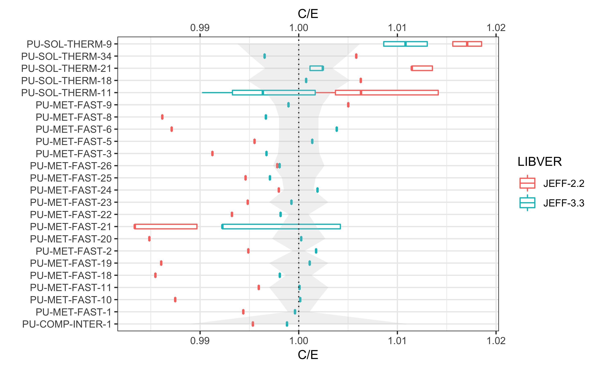
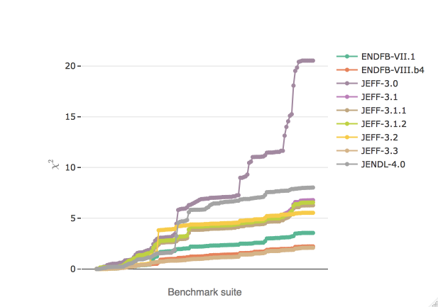
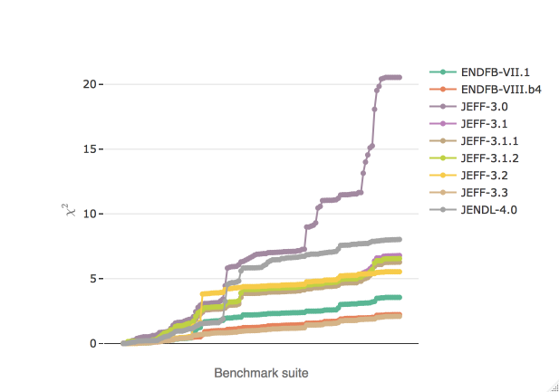

Screening evaluated nuclear data integral performance
 

The sendis R package provides an easy access to datasets and functions that expedite common tasks in the comparison of integral benchmarking performance of nuclear data libraries.
Background
The ability of a nuclear data library to accurately reproduce, in particle-transport simulations, the observables of benchmark-quality integral experiments plays a decisive role in the data validation process and therefore also in the decision-making process of assembling any nuclear data library.
The work presented here aims at providing elements of answers to the following questions:
- How do different nuclear data libraries compare in terms of integral performance?
- How has the integral performance of evaluated nuclear data libraries evolved across different releases?
- How do two assessments provided by two different benchmarking suites compare to each other?
- How to build a consistend benchmarking comparison across different assessments done by different institutions?
- How to spot general trends and outliers?
For the comparison of critical experiments, some helpful tools have been developed in this work.
Sources
- DICE, the OECD NEA database of the International Criticality Safety Benchmark Evaluation Project.
The sendis app
For seeing trends and filtering through the data, an interactive Shiny application has been developed. Find out more about the sendis app.